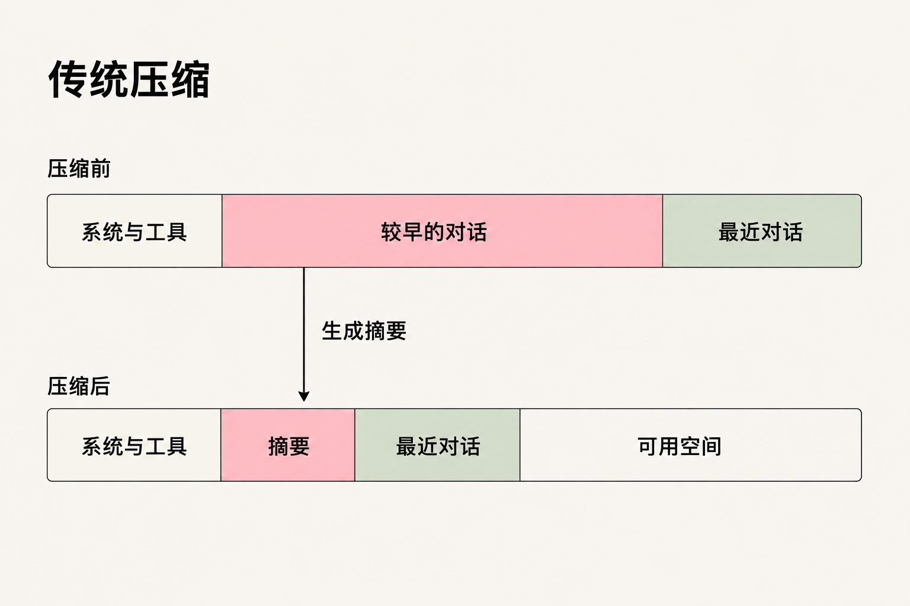
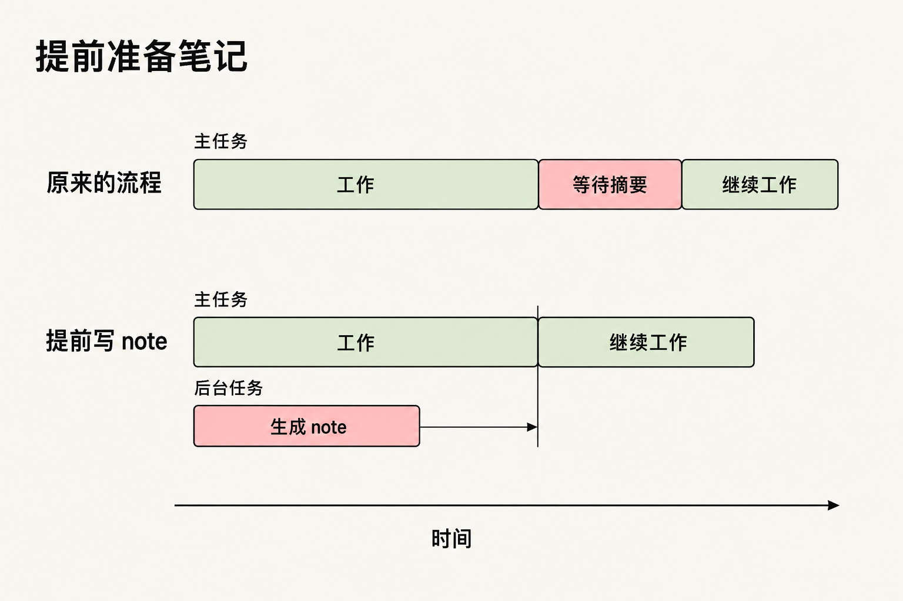
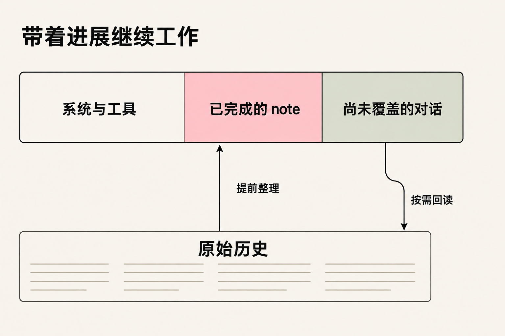

在使用 Agent 做长任务的时候，我们往往会让模型写一份交接文档，并将这份交接文档复制到一个新的会话窗口中，作为新的上下文，让模型开始新的工作。
在 Wuu 里实现上下文压缩时，我们想起了这个习惯，开始尝试把写交接文档放进默认的压缩流程。
原来的压缩怎样工作
先看传统的做法。一次模型请求里，开头是 system prompt、工具 schema 等固定内容，后面是不断积累的对话和工具结果。当对话接近窗口上限时，harness 会保留开头的固定内容和最近几轮对话，把更早的历史交给模型，生成一份摘要，再拼成新的上下文：

这样，手头正在做的事还能保留细节，更早的内容则由摘要代替，为任务腾出空间。
harness 负责监测上下文的余量，在预设的时机触发压缩，为下一次请求腾出空间。模型可以继续专注于当前任务。
让模型参与决定交接时机
harness 根据剩余容量决定压缩时机。任务本身也有适合交接的节点：排查完一个问题，或验证完一组改动。识别这些节点，需要了解正在进行的工作。
模型在做任务时，清楚这些进展。随着能力增强，它也应该能判断什么时候适合停下来、整理工作，再进入新的窗口。我们希望上下文管理能跟上模型能力的成长。
手动写交接文档的习惯给了我们启发。让模型留下目标、关键决策和下一步，比等到窗口快满时才打断任务，更接近一次正常的工作交接。
BYOK 带来的现实问题
实现过程中，BYOK 带来了差异。Wuu 由用户自己接入模型，各个模型的能力和训练数据都不同。有些模型能主动写交接文档、自己选择合适的时机开启新窗口，有些则需要 harness 提醒和触发。
为了让这些模型都能完成交接，我们保留 harness 对时机的控制，同时把生成交接文档的工作提前。
把串行等待挪到后台
原来的流程是，工作进行到压缩点，先停下来，等摘要写完，再继续。我们把写摘要的工作提前，主会话还在工作时，后台就开始准备。
我们复用当前会话的历史，在后台分支里生成交接文档。上下文积累到一定量，就把已经发生的部分内容整理进去；主会话继续往下走，后台则结合已有文档和新增内容持续更新。
到了需要压缩的时候，把已经准备好的交接文档和它还没涵盖的新对话拼起来：
system prompt + tool schema + note + 还没涵盖的新对话
交接文档已经完成时，原来卡在压缩点的那段串行等待就省掉了。写摘要与主任务同时进行，端到端延迟也随之下降。压缩点要做的是接上已有的文档，让工作继续。

后台写交接文档的时候，主会话还在继续推进。这部分新内容会和文档一起完整地带进新窗口。如果文档还没准备好，或拼起来的内容仍然放不下，就回到原来的压缩流程。
交接以后，还能看原始内容
写交接文档时，很难提前知道下一阶段会用到哪一个细节。现在看起来不重要的一次失败，之后可能变成线索。
因此，Wuu 保留原始会话记录，并让交接文档带上重要内容的历史引用。进入新窗口后，模型可以顺着引用去查，也可以搜索旧对话。文档负责让它接上工作，需要细节时再回到原始记录里看。

这也让后续的演进更自然。当模型更善于管理自己的上下文时，维护文档、判断交接时机这些工作可以更多地交给它。原始记录的保存、读取和窗口切换仍然提供支持，交接方式可以跟着模型的能力一起演进。
继续阅读第一次读取，需要多少信息 ↗